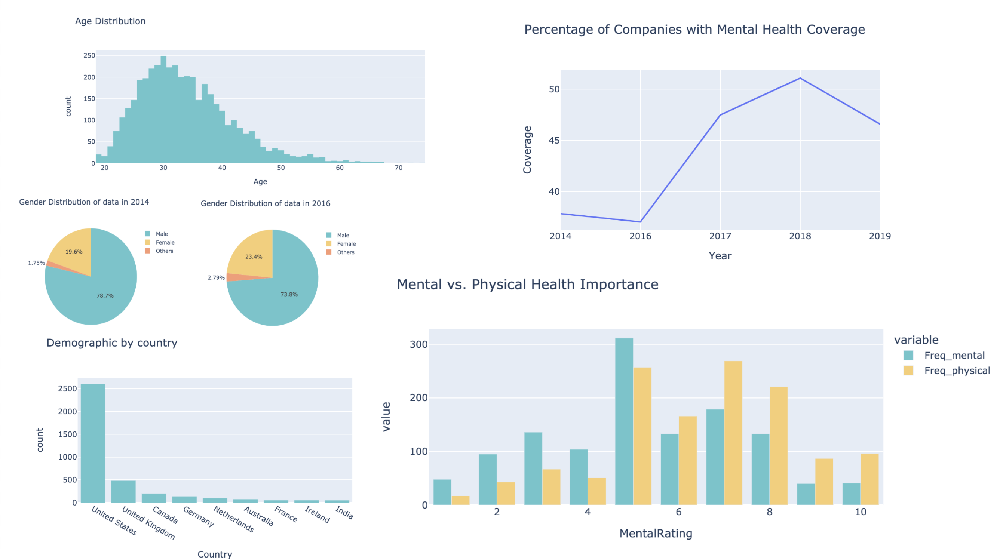

I'm Jessica, a computer engineer who specializes in full stack
development.
My strong interpersonal skills as well as genuine interest in building meaningful connections makes
me
an efficient team member and leader. I'm always eager to expand my skill set and grow in this
exhilarating world of tech!
🔓 Open Source Work

VS Code OpenShift Tools: Create OpenShift Component Webview
Typescript, React, VS Code API
Prior to this change, there was a visibility issue with the different methods to create an
OpenShift component. The workflows were scattered across different views and commands. To solve
this issue, this webview combines three different workflows cohesively while improving the UI to
better developer experience.
VS Code Java: Decompile Class Files
Java, Typescript, VS Code API
As seen in the demo on the left, before the change, opening a class file was not supported and
would show the raw content if we tried to open it.
To address this, I created this webview page that calls the decompiler to show the decompiled
class content that's readable.
I enjoying having the design freedom for this feature, where I got to pitch my own ideas on what
the feature should look like based on my understanding of user base and the problem.
VS Code XML Extension: New Formatting Strategy and Settings
Java
I adapted 10 existing settings of the old formatter to the new formatter and implemented the new
max line width setting as requested by users. The
main reason behind rewriting the formatter was to create a fault tolerant formatter that worked
well even with invalid XML. Read about the new strategy and list of preferences in detail
here.
After the experimental formatter was made the default, I'm also responsible for any formatting
related bugs or additional enhancement requests coming from users. It was very fulfilling to
have interactions where you get to help out a user with a fix or provide an answer for their
question.
Projects

MealDork: A Grocery List Generation App
Python, KivyMD
I created this app out of my own need of a grocery list app that suits my personal method of
shopping, which was previously unavaliable on the market.
This app takes inputs of personal recepies, stores it in a database, and generates a shopping
list based on user preferences.
The app also includes an recipe explore page that uses the Spoonacular API to display popular
recipes.

sMaps: City map tailored for campus life
C++
sMaps is a usable map made for students that includes amenity and live weather data that is
avaliable for 20+ cities worldwide.
Multiple algorithms like A*, 2-opt, and multi-start results in an optimized search feature that
is user-friendly with auto-complete.
To ensure the map is responsive with larger cities, efficient coding and multithreading were
used to reduce complexity as much as possible.

Mental Health in Tech: A closer look
Python, Plotly, Pandas
As someone who is a member of the technology industry, I wanted to see how mental health is
perceived in this highly competitive field.
This exploratory data analysis of the mental health situation in the technology industry takes a
closer look of the
correlation between the user data and the mental health policies at their place of employment
over time. Extensive cleaning
has been done to make the initial data make sense and readable.
Blogs
New Features for Qute Templating Engine Support in Quarkus Tools for Visual Studio Code
1.13.0
April 19, 2023
Read Here.
This article outlines the exciting features of the new VS Code Quarkus release that improved
the Qute Templating Engine support. I was very involved in this release as I either implemented or
reviewed most of the features show cased in the blog.
How the new VSCode XML extension improves developer experience
November 29, 2022
Read Here.
As I worked on adapting the old formatting settings to the new, I also worked on
implementing brand
new settings that were unique to the new formatter that were heaviliy requested by users.
I wrote about these settings in detail in the
New experimental formatter settings section.
Get In Touch!
The best way to contact me would be by email, but also feel free to shoot me a message on any other
socials!
{kind=link}
{kind=link}
{kind=link}
Get In Touch!
The best way to contact me would be by email, but also feel free to shoot me a message on any other socials!
Address
Toronto, CanadaEmail
jessicaj.he@mail.utoronto.ca